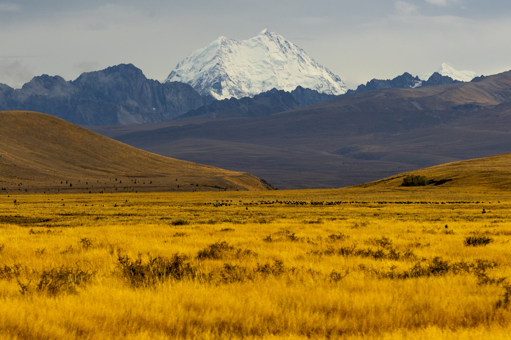
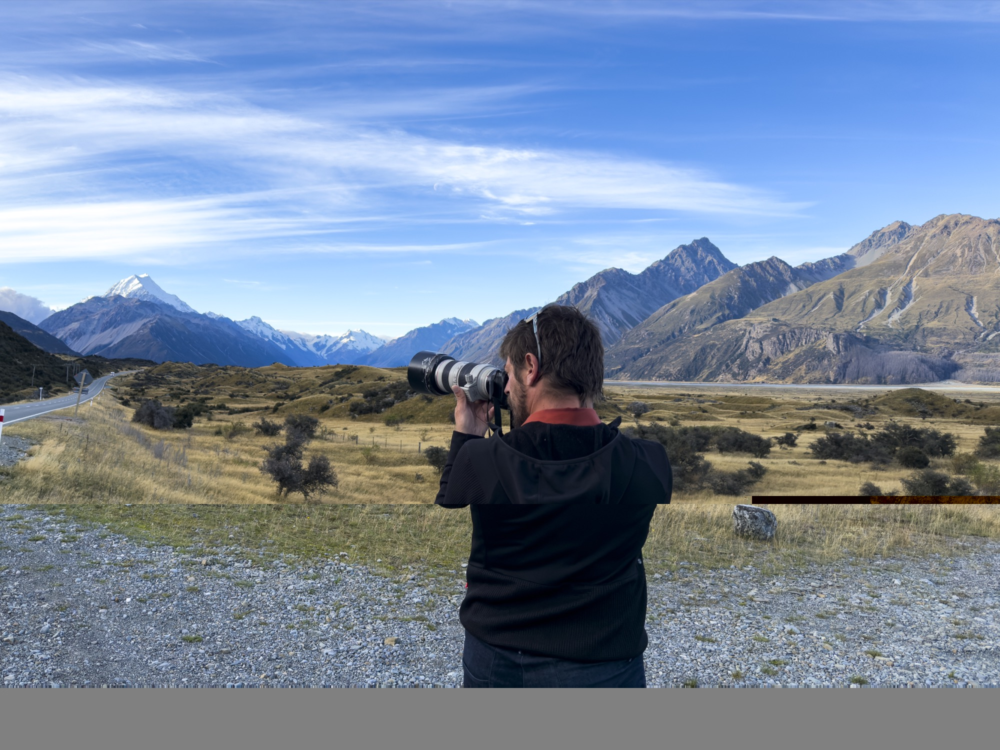

Un archivo para vender la experiencia
Fotografía de paisaje, personas, actividades y detalles para actualizar páginas de viaje, presentaciones y material comercial.
PROPUESTA PARA SAMAR MAGIC TOURS · FITUR
Una producción fotográfica y audiovisual para mostrar cómo se vive vuestra expedición por Mongolia, desde dentro.
Una mirada al Gobi, a los guías, a los viajeros y a todo lo que sucede entre una fotografía y la siguiente.
LA OPORTUNIDAD
Vuestro viaje fotográfico por el Gobi y Mongolia central ya tiene una historia que contar. Mi propuesta es acompañar una expedición y crear imágenes que ayuden a futuros viajeros a imaginarse allí.
Las rutas en 4×4, la preparación de cada jornada, el trabajo de vuestros guías y los encuentros locales pueden convertirse en contenido útil para presentar la experiencia en vuestra web, redes y canales comerciales.
LA PROPUESTA CREATIVA
Selecciona cada parte para explorar la idea.
Preparativos, desplazamientos en 4×4, paisajes y momentos cotidianos. Imágenes que muestran la escala de Mongolia y el ritmo real de la expedición.
QUÉ PODÉIS HACER CON EL MATERIAL
Fotografía de paisaje, personas, actividades y detalles para actualizar páginas de viaje, presentaciones y material comercial.
Vídeo del viaje y de su trastienda para mostrar a los viajeros cómo se desarrolla la expedición y quiénes la hacen posible.
Podéis utilizar las imágenes para crear vuestra propia campaña o podemos desarrollar una propuesta juntos. Alcance y derechos de uso acordados según vuestras necesidades.
UNA MIRADA AL TRABAJO DE JUAN
Estas fotografías son una muestra de mi trabajo anterior. La producción propuesta para Samar se realizaría en Mongolia junto a vuestro equipo local.



CÓMO TRABAJARÍAMOS
01Definir el objetivoElegimos juntos el viaje, el público y el uso previsto del material.
02Producir en rutaMe desplazo con vuestro equipo y colaboramos con guías y personas locales. La duración se adapta al proyecto.
03Dar vida al contenidoPreparamos las imágenes y los vídeos acordados, o desarrollamos la campaña juntos.
NOS VEMOS EN FITUR
Soy Juan Aizpuru, fotógrafo y realizador. Me gustaría conocer vuestros planes y explorar cómo contar vuestra próxima aventura en Mongolia.
Conocer mi trabajo ↗